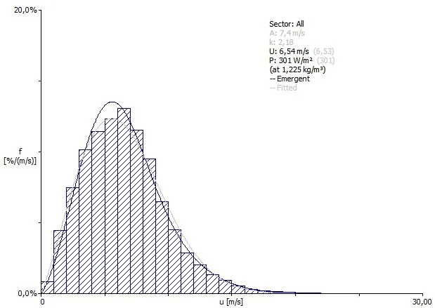
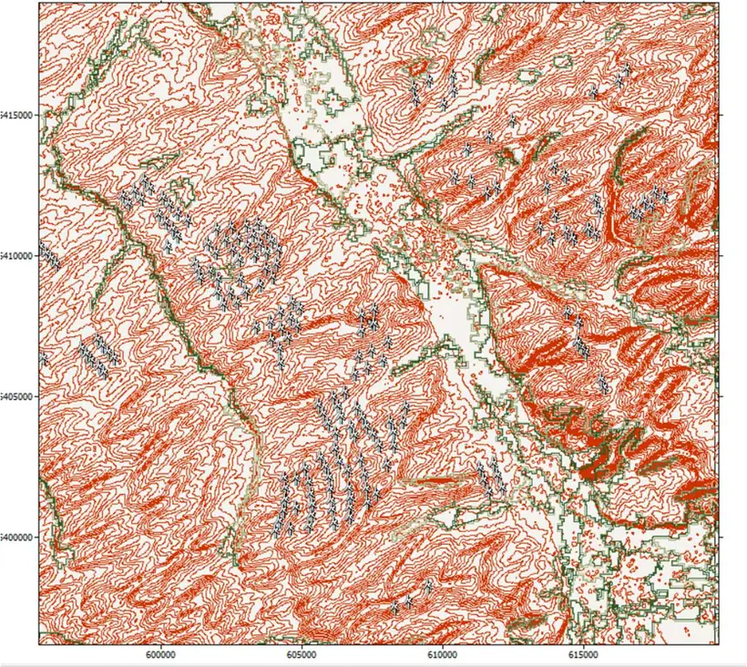
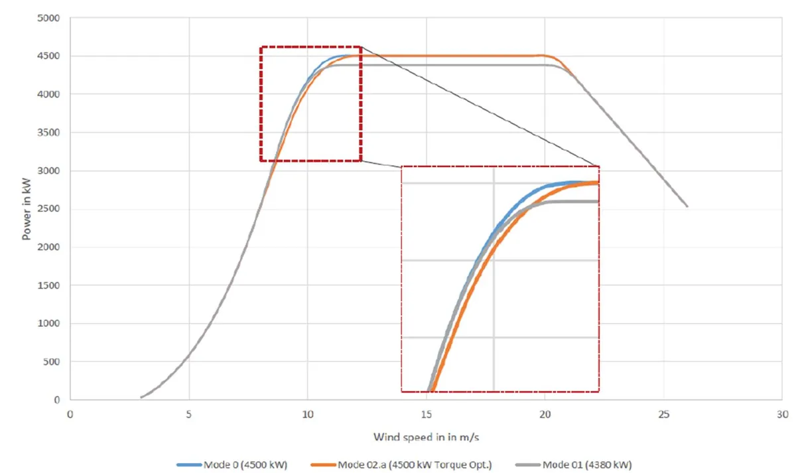

Grid connection study tool
The context
In France, a wind or solar farm can wait more than eight years for its grid connection, for lack of capacity at the source substations.
What I built
For each project, the tool finds the substations that can really be reached by road, checks their hosting capacity and prices the connection. It is the subject of my Master's thesis.
- Company
- Energiter, wind and solar engineering consultancy
- Role
- Renewable energy design engineer, final-year internship
- Period
- April – September 2024
- Framework
- Master's thesis, UPV/EHU, October 2024
- Architecture
- An Excel/VBA interface that drives Python scripts through PowerShell
- Caparéseau source substations filtered and ranked by criticality, in 5 to 20 s
- 3,400+
- response time with asynchronous calls to the IGN API: from 15–35 s down to 3–15 s for 10 substations
- −64%
- PV feasibility and yield studies, MV-connected plants from 2 to 22 MWp
- 40+
- wind simulations in WAsP and windPRO, 3 to 15 MW wind farms
- 15+
Processing chain
-
01
Grid data
Automatic download and archiving of Caparéseau data (RTE, over 3,400 source substations) and of the regional S3REnR schemes.
-
02
Real distance
The IGN routing API, called asynchronously by car, on foot or whichever is shorter, after preselecting substations within a radius of the project.
-
03
Substation analysis
Substations with 20 kV or more downstream, a 0-to-5 criticality score from capacity with and without works, transformers and remaining HV/MV capacity, planned substations flagged.
-
04
Costing
17 MW modules, a cable picked from a power × distance table, network cost and the regional cost share looked up from the coordinates, several power levels compared at once.
-
05
Deliverables
KML routes for Google Earth, HTML maps (folium), an archived project database, and a PDF and XLSM report generated from Excel.
Demo · fictitious data
Grid connection study
A simulation on fictitious data, using the tool's logic. Click the map to place the solar farm, or move it with the arrow keys, then adjust its capacity.
- Selected substation
- P-0263 kV, 14 MW available
- Road distance
- 17.9 km13.9 km as the crow flies
- Cable
- 1 × 2×240 Alu€120k/km
- Connection cost
- €2,694k€225k/MW, incl. €541k regional cost share
P-09 is the closest as the crow flies (5.4 km) but has only 0 MW available: the tool moves on to the next substation.
- 63 kV substation
- 90 kV substation
- 225 kV substation
- River, three bridges
- Selected route
- As the crow flies
- Solar farm
Same logic as the tool delivered at Energiter: shortest road path (Dijkstra), a check of the substation's hosting capacity, a cable chosen by power and distance, then network cost and regional cost share. Prices and cable table taken from the thesis.
What the tool showed
Three test cases from the thesis, picked at random across France. A stated limit: routes assume every path is usable; private land and railways still need checking.
Project
12 MW
Selected substation
Montbrun, 14.3 km away
Not the nearest substation, but the only one with enough downstream voltage and capacity.
Project
10 MW
Selected substation
Phalsbourg
Preferred over Ingwiller, which is closer: capacities must be compared with and without reinforcement works.
Project
20 MW wind
Selected substation
Gouzon saturated, Ouest-Allier option
With no capacity available, the tool points to a future substation (40 MW planned) and a further study.
Energy studies carried out alongside
Over 40 PV feasibility and yield studies (MV-connected plants from 2 to 22 MWp, PVsyst with Solargis data) and over 15 wind simulations (3 to 15 MW wind farms, long-term correlation with the ERA5 and MERRA reanalyses, WAsP and windPRO modeling with terrain and roughness maps). I also carried out grid connection studies for RTE and Enedis substations (MV/LV constraints, cost share, point of delivery) and developed a windPRO bat-curtailment method, validated against the in-house Python tool: about one point of difference on two wind farms.



Technologies
- Python
- asyncio / aiohttp
- IGN Géoportail API
- Dijkstra
- geopy
- folium
- simplekml
- Selenium
- pandas
- Excel / VBA
- PowerShell
- WAsP
- windPRO
- PVsyst